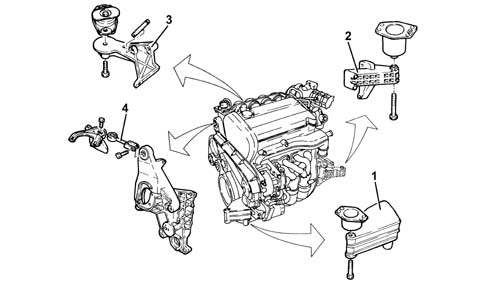
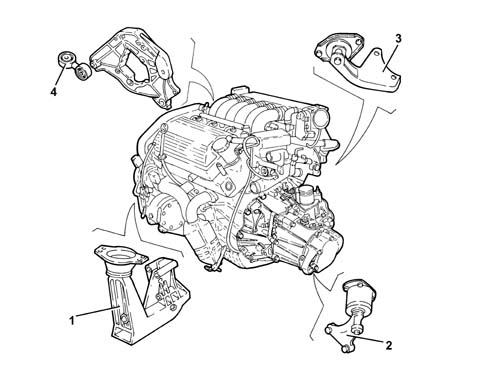
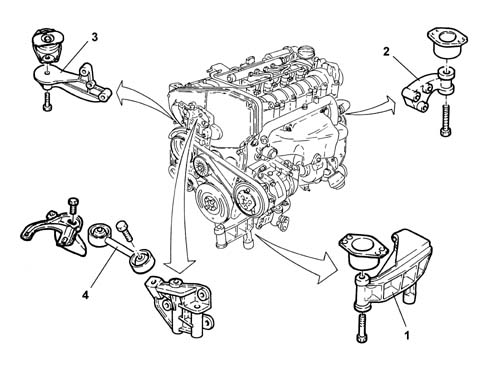

INTRODUCTION - POWER UNIT SUPPORTS
- Path
- Descriptions > 10 ENGINE UNIT > 1008 POWER UNIT SUPPORTS > INTRODUCTION - POWER UNIT SUPPORTS
- Kind
- system description
- Applies to
- engines: 2.0 JTS, 3.2 V6, 1.9 JTD 16V; all production periods
- Interactive page
- https://sloeber94.github.io/elrnDB-aGt/en/#/125000244
Applies to: engines: 2.0 JTS; all production periods
CONSTRUCTION FEATURES
The power unit mounting is the 'suspended' type.
The unit is fixed to the bodyshell by means of three supports with flexible damping mountings:
- one in aluminium alloy on the timing side (1);
- one in aluminium alloy on the gearbox side (2);
- one swivelling type in steel (3), which is fastened to the front suspension crossmember.
To limit jolting, the engine is connected to the bodywork at the top by means of a counterbrace (4).

Applies to: engines: 3.2 V6; all production periods
CONSTRUCTION FEATURES
The power unit mounting is the 'suspended' type.
The unit is fixed to the bodyshell by means of three supports with flexible damping mountings:
- one in aluminium alloy on the timing side (1);
- one in aluminium alloy on the gearbox side (2);
- one swivelling type in steel (3), which is fastened to the front suspension crossmember.
To limit jolting, the engine is connected to the bodywork at the top by means of a counterbrace (4).

Applies to: engines: 1.9 JTD 16V; all production periods
CONSTRUCTION FEATURES
The power unit mounting is of the 'suspended' type.
The unit is fixed to the bodyshell by means of three supports with flexible damping mountings:
- one in steel on the timing side (1);
- one in aluminium alloy on the gearbox side (2);
- one swivelling type in steel (3), which is fastened to the suspension crossmember
To limit jolting, the engine is connected to the bodywork at the top by means of a counterbrace (4).
